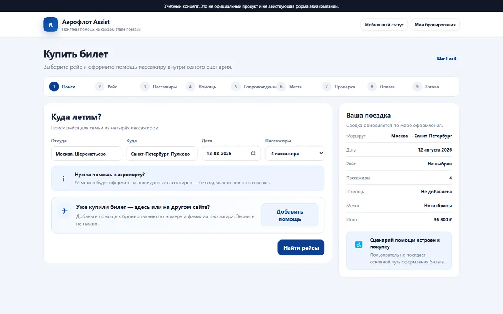
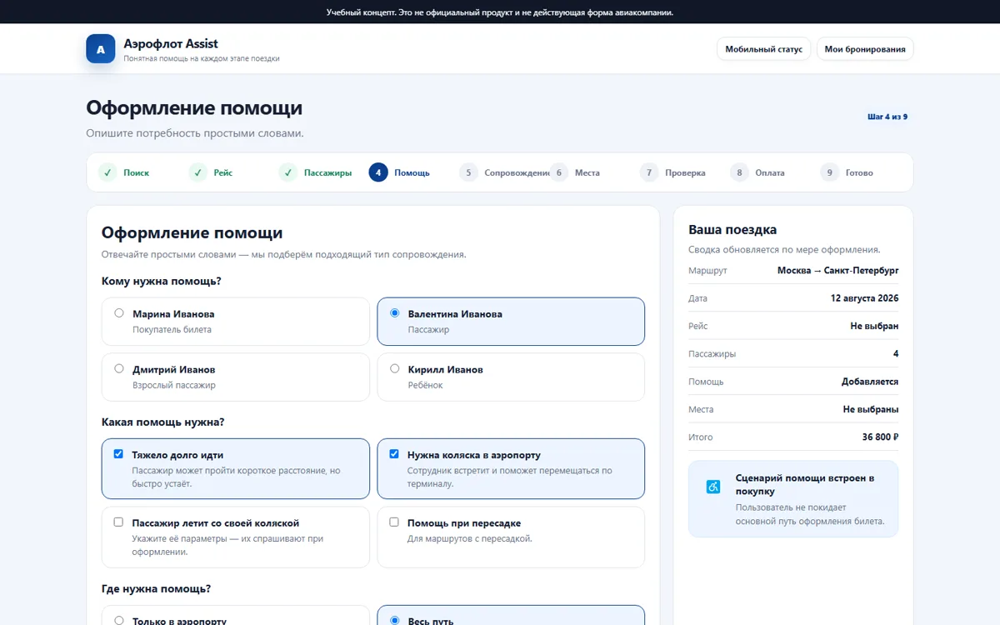
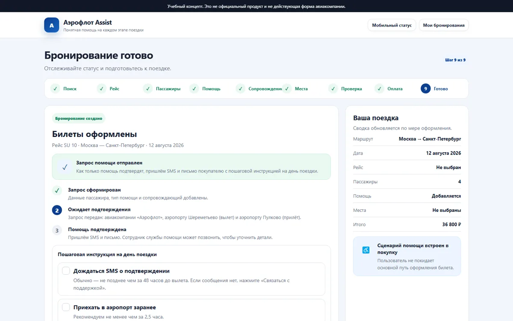

Помощь в аэропорту без звонков
Как заказать помощь маломобильному пассажиру там же, где покупаешь билет — и до вылета знать, что тебя встретят. Концепт для сайта авиакомпании: помощь оформляется прямо при покупке, а если билет куплен на агрегаторе — по номеру брони.

Сама помощь работает. Сломан вход в неё
Кейс вырос из личной поездки: я летела с бабушкой, у неё была своя коляска. Билеты купила на агрегаторе — и там не нашла ни слова о том, как заявить помощь.
Покупка
Билеты через агрегатор. Информации о помощи нет.
Звонок в аэропорт
Логично: помощь же в аэропорту. Ответ: «звоните перевозчику».
Звонок в авиакомпанию
Рейс, ФИО, своя ли коляска, её размеры, помощь на весь путь или только в аэропорту. Ответы нужно знать на ходу.
День вылета
Встретили после регистрации, проводили, помогли сесть.
Прилёт
Встретил сопровождающий. Одной заявки хватило на оба аэропорта.
Трудно не в аэропорту, а на этапе заказа.
Значит, кейс не про обслуживание, а про понятный заказ помощи.
Помогает аэропорт, а заказывать надо у авиакомпании.
Пассажир этого не знает и звонит не туда. Ему не нужно разбираться, кто за что отвечает.
Две истории с одной развилкой
Своя история и анкета человека, которому помощь была нужна после травмы. Сценарии разные, а сломалось одно и то же место.
| Моя поездка | Респондент | |
|---|---|---|
| Роль | организатор для родственника | сам пассажир |
| Маломобильность | постоянная, своя коляска | временная, после травмы |
| Куда пошли сначала | в аэропорт | на сайт и в поддержку аэропорта |
| Как оформили | звонками | звонок → «оформляйте на месте» |
| Сама помощь | хорошо, и на прилёте | хорошо, на прилёте встретили |
Честно: это одна анкета и мой опыт. Для выводов мало — анкету я переделала (убрала наводящие вопросы) и собираю ещё 2–4 истории.
- Оба начали с аэропорта — непонятно, кто отвечает за помощь.
- Оба оформляли не онлайн: звонки и «на месте».
- Сама помощь в обоих случаях сработала хорошо.
- Маломобильность бывает временной — подписывать пассажира по возрасту неверно.
- Бывает экстренно, за 1–2 дня — форма должна честно сказать, что будет, если времени мало.
- Доверие дают сообщение, человек и инструкция, а не статус в личном кабинете.
Помощь — шаг покупки, а не звонок
Сценарий из 9 шагов: поиск → рейс → пассажиры → помощь → сопровождающий → места рядом → проверка → оплата → готово. Помощь стоит 0 ₽ и уходит вместе с бронированием.


Что вычеркнула и почему
Каждое из этих решений сначала казалось правильным.
«Пожилой пассажир, 74 года»
Подписи по возрасту
В анкете помощь была нужна после травмы, а не из-за возраста. Теперь подпись по потребности: «после травмы, операции, из-за возраста или по здоровью».
Статус в личном кабинете как главное
Доверие через кабинет
В анкете выбрали сообщение, сотрудника и инструкцию, а статус — нет. Статус остался, но главным стало SMS и письмо.
«Какая функция вам помогла бы?»
Наводящие вопросы
Они подталкивали к моим решениям. В новой анкете — только что человек реально делал.
«Нужна помощь» одной галочкой
Помощь одним чекбоксом
Сначала понять потребность: коляска, сопровождение, посадка, встреча после прилёта. Потом собрать услугу.
Переделать обслуживание в аэропорту
Слишком широкая рамка
Сама помощь работала хорошо. Фокус — на заказе и подтверждении.
Поезд, такси, гостиницы
Все виды транспорта сразу
Это масштабирование на потом. В кейсе — только авиа, чтобы не размывать исследование.
Кейс в работе
Главный вопрос кейса шире авиабилетов: как сделать, чтобы важная потребность не просто сохранилась в форме, а дошла до человека, который должен помочь.
- Путь «как было» и два инсайта
- Анкета, респондент № 1, анкета v2 без наводящих вопросов
- Кликабельный прототип v2: 9 шагов, крупный текст, работа с клавиатуры
- Ещё 2–4 интервью, в том числе с теми, кто отказался от перелёта
- Сравнить, как помощь заявляют 3–4 авиакомпании и агрегатора
- Перенести прототип в Figma и проверить на 3–5 людях